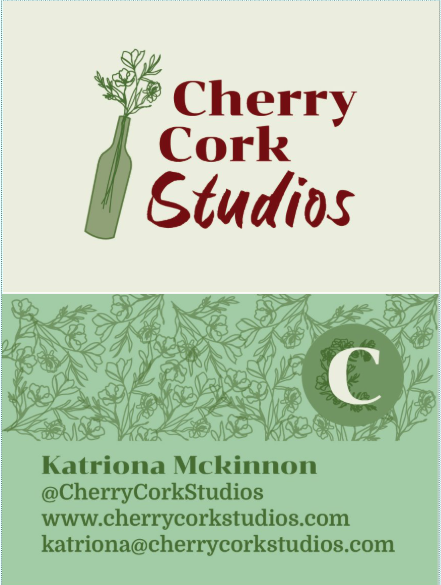

My main interest and focus for my career is website design and development. Therefore, for my self-led major project (dissertation) I decided to choose a client led branding and web design project; so I found a startup and offered to create all of their branding materials for them for free. I am still in the process of completing this but have already done the brand design, graphics and photography; the next stage is coding the website. I am teaching myself further coding skills by using multiple advanced readings and am in the process of learning to combine self-code with WordPress and HTML with CSS. By the end of this project, I will have taken a company that had no branding at all (logo, social media, etc) to a business with branding guidelines including font and colour specifications, logos and social media guidelines; multiple online presences including a website with multiple pages that I hand coded the majority of, also using plugins on WordPress.

This is an example of the work I have completed so far for my client. I created the colour scheme and typography, as well as drawing up the logos and additional symbols. To the left is the front/back of my clients new business cards which she now hands out at all events, promoting her social media and encouraging visitors to reurn. I have also attended multiple of their events as a photographer to ensure I have plenty of professional looking assets to add to her website.